The symbol configuration system defines the universe of tradable assets and their associated metadata. This configuration is centralized in config/symbol.config.cjs and is used across the frontend for UI rendering and the backend for prioritizing trading operations and news fetching.
The core of the configuration is the symbol_list array. Each object in this array represents a trading pair (typically against USDT) and follows a strict schema to ensure compatibility with both the trading engine and the dashboard.
| Field | Type | Description |
|---|---|---|
symbol |
string |
The exchange-standard ticker (e.g., "BTCUSDT"). Used as the primary key. |
displayName |
string |
Human-readable name used in the UI (e.g., "Bitcoin"). |
icon |
string |
Path to the small icon asset (typically 32x32). |
logo |
string |
Path to the high-resolution logo asset (typically 128x128). |
color |
string |
Hexadecimal color code used for charts and UI branding. |
priority |
number |
Numerical value determining the asset's importance tier. |
description |
string |
Multi-line text describing the asset, formatted via str.newline. |
Descriptions are constructed using the str.newline utility from functools-kit. This function accepts multiple string arguments and joins them with newline characters, allowing for clean, readable code while maintaining structured output for the UI.
The system categorizes symbols into four distinct priority tiers based on the priority field. These tiers influence how the system allocates resources (like news fetching frequency or UI placement).
| Tier | Priority Value | Typical Assets |
|---|---|---|
| Premium | 50 |
BTC, ETH, UNI |
| High | 100 |
SOL, BNB, LTC, BCH, NEO, FIL, XMR |
| Medium | 150 |
XRP, AVAX, LINK, DOT, MATIC, AAVE |
| Low | 200-300 |
Long-tail altcoins and niche tokens. |
The following diagram illustrates how the symbol_list configuration propagates from the static config file to the functional areas of the codebase.

The configuration uses CommonJS modules to export the symbol_list.
The color and logo fields are specifically designed for the frontend to create a branded experience for each asset. For example, Bitcoin is associated with #F7931A, while Ethereum uses #6F42C1.
This diagram bridges the natural language names of assets to their technical identifiers used in the code logic.
Title: Natural Language to Code Entity Mapping

To add a new trading pair to the system, follow these steps:
config/symbol.config.cjs and append a new object to the symbol_list array.symbol to the CCXT-compatible ticker (e.g., LINKUSDT).priority based on the tiers defined above.str.newline().Example Entry:
{
icon: "/icon/link.png",
logo: "/icon/128/link.png",
symbol: "LINKUSDT",
color: "#375BD2",
displayName: "Chainlink",
priority: 150,
description: str.newline(
"Chainlink (LINK) - a decentralized oracle network",
"Provides data transmission from the external world to smart contracts"
),
}